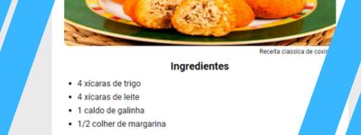
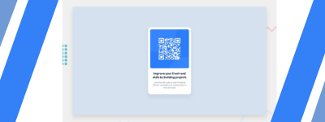
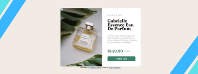

Olá, meu nome é
Jaelson P.SilvaTransformo Sonhos em Realidade Digital.
Bem-vindo(a) ao meu Portfólio! Sou um estudante de Sistemas para Internet, desenvolvedor web Front-End, apaixonado por criação de páginas web. Estou em constante aprendizado e sempre buscando evoluir.

Nome do projeto: Projeto receita do dia
O projeto se concentra na elaboração de uma página simples, empregando os princípios fundamentais do HTML como base, com especial enfoque no uso de listas.
Link do repositorio: Projeto receita do dia

Nome do projeto: scan qr
O projeto tem como objetivo aplicar os fundamentos do HTML e CSS, com foco na utilização do display flex e alinhamento, para criar uma tela de QR Code.
Link do repositorio: scan qr
Nome do projeto: pagina de noticias
O projeto é uma página simples de notícias para envio de e-mails, desenvolvida em HTML e CSS, utilizando posicionamento position: absolute para organizar os elementos de forma específica na tela.
Link do repositorio: pagina de noticias

Nome do projeto: Card produto
O projeto é um desenvolvimento web front-end utilizando HTML e CSS, onde foram aplicadas as propriedades display: flex e position para alinhar os elementos na página.
Link do repositorio: card produto

Nome do projeto: Agenda telefonica
O projeto tem como objetivo desenvolver uma agenda telefônica utilizando Python, na qual os dados são armazenados em um arquivo separado.
Link do repositorio: Agenda telefonica
lfdlfdlfldlfldl